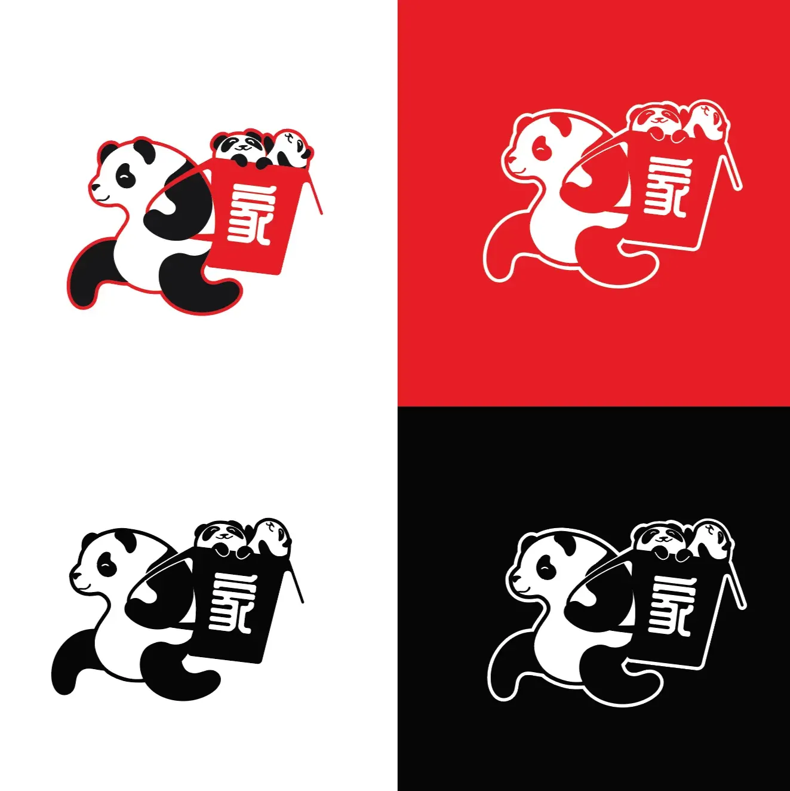

My name is Joshua Stewart.
I’m a graphically-inclined designer intrigued by the synthesis of multidimensional interoperability in the web. I navigate product visuals through connection with and analysis of users.
Welcome to the first draft of my portfolio.
For this intial test, I wanted to implement some basic 3d functionality.
Feel free to reach out at the following:
- Email: jns-elearn@outlook.com
- LinkedIn: Joshua Stewart
- Instagram: the_stew_ut
Graphics and Print
Images In Communication: Album Campaign

King Princess combines mood, tone, and story to make their music truly captivating. I wanted to capture some of that narrative artistry with this project, and create an album design that I could be proud of.
- Instructor: Carley Law
- Timeline: 5 Weeks
- Course: DES 335
- Tools Used:
- Adobe Photoshop
- Adobe Illustrator
- Adobe InDesign
- Blender
First Steps
Storming the mind
Brainstorming went by fast. I knew from the start that I wanted to focus on King Princess’ Girl Violence ever since I had seen them perform at Austin City Limits. Their stage presence was amazing, their stage graphics were outstanding, and their music was enrapturing; I was hooked.

I want to preface this by saying that I quite enjoy (and probably prefer) the original album art, because it reflects what KP as an artist wants. That said, I wanted to stray away from focus on the scantily clad cartoon cherry for the sole reason that I didn’t want to force my professor to have to analyze fruit nudity. I understand Cherry’s significance to the album’s storyline and kept the motif in my work, although a bit less revealing. I also feel that the character’s style doesn’t align with the sound of the album (this is most definitely on purpose, since the lyrics are rife with themes of manipulation/distortion of one’s reality, but I digress).
Covering Up


I wanted to create the cover first, as I knew I’d probably pull assets from it for the other required assets. This came with it’s fair share of challenges, though. My first (and biggest) hurdle appeared in the form of a process requirement on the project sheet. We needed to include some kind of physical element that we manipulated in our design somewhere. I was originally going to shatter some glass or a mirror, scan it, and use it in the cover. Fear about imperfect shatter lines arose, and I couldn’t possibly justify spending money on a mirror just to trash it. After finding a suitable commercially-available shattered glass image, my next idea was to purchase a cherry and smush it. Little did I know… cherries are like, *way* out of season. I settled for a blueberry, then replaced it with a cherry in post.

This method came with the added benefit of looking like a splat of blood, which really works considering a certain song on the album: RIP KP. I initially wanted to use the pictures I got from ACL, but those were lost in an unfortunate phone storage incident. I took a screenshot from this great video of one of KP’s performances and modified it to work for my concept.


For the gatefold’s interior, I used an photo taken by Naina Srivastava from ACL. I dithered it in the same manner as the cover.

Asserting Assets
Poster

Booklet

Record Label

VIP Pass

Renders


I designed this menu for the 'Resturant Rebrand' Assignment in DES 335.

I designed this logo for Longhorn Developers, a UT student org dedicated to making browser extensions and apps that benefit the student body.
Digital Art and Personal Works
I don't have anything in here yet, so check out this sick shelf I made.